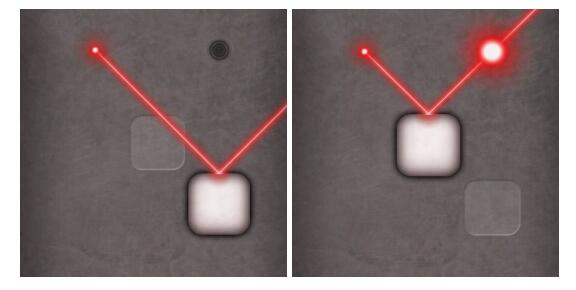
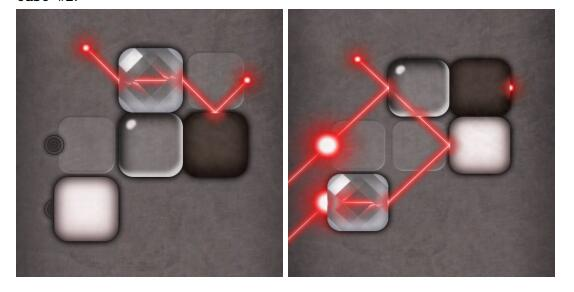
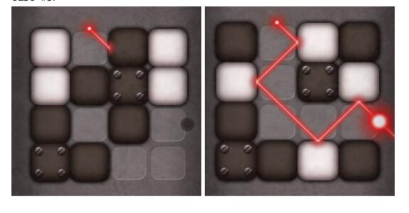

HDU6009. Lazors
内存限制：12000/6000 MS (Java/Others) 时间限制：32768/32768 K (Java/Others)
题目描述
Lazors is a puzzle game of lazers and reflections. There is a board of size N × M; some lazer transmitters and receivers installed on the board; and some tiles are initally placed in the board cells. The goal is to move the tiles so that all receivers get radiated by lazer beams with possible a series of reflections and refractions.
Transmitters are always at the center of one side of a cell. The direction of an emitted lazer beam is either diagnal or anti-diagonal. Each transmitter can be described by 4 parameters: x, y, from_dir, to_dir, where from_dir and to_dir is one of N, S, E, or W, representing north, south, east or west side of the cell. The first two parameters indicate the emitted lazer beam comes from cell on row x, column y; the last two indicate the direction of the emitted lazer beam.
Receivers are also at the center of one side of a cell. Each receiver can be described by 3 parameters:
x, y, dir, where dir is one of N, S, E, or W, representing north, south, east or west side of the cell. The parameters indicate the receiver is located at the center of dir side of the cell on row x, column y.
There are 4 types of tiles: white tile, black tile, glass tile, and prism tile. Each type of tile has its unique nature on lazer beam reflection and refraction.
A white tile reflects lazer beams by law of reflection. In the following picture, the transmitter is the small red dot in the north-west corner, and the radiated receiver is the big red dot in the
north-east corer.

A black tile absorbs lazer beams. Lazer beams are stopped upon hitting the black tile. In the following picture, the transmitter is the small red dot in the north-west corner, and the un-radiated receiver is the target icon in the south-east corner.

A glass tile split one lazer beam into two lazer beams, with one beam reflected by law of reflection and the other passing through the tile. In the following picture, the transmitter is the small red dot in the south-east corner, and the radiated receivers are the two big red dots above the receiver.

A prism tile refracts lazer beams. A lazer beam is “shifted” by one unit of grid and keeps going with the orignal direction. In the following picture, the transmitter is the small red dot in the north-west corner, and the radiated receiver is the big red dot in the south-east corner.

A fixed tile is locked on the board. You cannot move a fixed tile. In the following picutre, the white tile on row 2 column 2 is fixed. Black tiles, glass tiles, and prism tiles can also be fixed.

Transmitters are always at the center of one side of a cell. The direction of an emitted lazer beam is either diagnal or anti-diagonal. Each transmitter can be described by 4 parameters: x, y, from_dir, to_dir, where from_dir and to_dir is one of N, S, E, or W, representing north, south, east or west side of the cell. The first two parameters indicate the emitted lazer beam comes from cell on row x, column y; the last two indicate the direction of the emitted lazer beam.
Receivers are also at the center of one side of a cell. Each receiver can be described by 3 parameters:
x, y, dir, where dir is one of N, S, E, or W, representing north, south, east or west side of the cell. The parameters indicate the receiver is located at the center of dir side of the cell on row x, column y.
There are 4 types of tiles: white tile, black tile, glass tile, and prism tile. Each type of tile has its unique nature on lazer beam reflection and refraction.
A white tile reflects lazer beams by law of reflection. In the following picture, the transmitter is the small red dot in the north-west corner, and the radiated receiver is the big red dot in the
north-east corer.
A black tile absorbs lazer beams. Lazer beams are stopped upon hitting the black tile. In the following picture, the transmitter is the small red dot in the north-west corner, and the un-radiated receiver is the target icon in the south-east corner.
A glass tile split one lazer beam into two lazer beams, with one beam reflected by law of reflection and the other passing through the tile. In the following picture, the transmitter is the small red dot in the south-east corner, and the radiated receivers are the two big red dots above the receiver.
A prism tile refracts lazer beams. A lazer beam is “shifted” by one unit of grid and keeps going with the orignal direction. In the following picture, the transmitter is the small red dot in the north-west corner, and the radiated receiver is the big red dot in the south-east corner.
A fixed tile is locked on the board. You cannot move a fixed tile. In the following picutre, the white tile on row 2 column 2 is fixed. Black tiles, glass tiles, and prism tiles can also be fixed.
输入格式
The first line of the input gives the number of test cases, T. T test cases follow.
Each test case starts with a line containing two integers: N, M. Each of the following N lines contains M characters:
$\bullet$ ‘.’ indicates an empty cell.
$\bullet$ ‘#’ indicates an cell that forbids placing any tiles.
$\bullet$ ‘o’ or ‘O’ indicates a white tile.
$\bullet$ ‘b’ or ‘B’ indicates a black tile.
$\bullet$ ‘x’ or ‘X’ indicates a glass tile.
$\bullet$ ‘m’ or ‘M’ indicates a prism tile.
$\bullet$ Capitial letters indicate fixed tiles.
Next line contains an integer X, the number of transmitters. Each of the following X lines contains
2 integers x, y; and 2 characters from_dir, to_dir.
Next line contains an integer Y , the number of receivers. Each of the following Y lines contains 2 integers x, y; and 1 character dir.
Each test case starts with a line containing two integers: N, M. Each of the following N lines contains M characters:
$\bullet$ ‘.’ indicates an empty cell.
$\bullet$ ‘#’ indicates an cell that forbids placing any tiles.
$\bullet$ ‘o’ or ‘O’ indicates a white tile.
$\bullet$ ‘b’ or ‘B’ indicates a black tile.
$\bullet$ ‘x’ or ‘X’ indicates a glass tile.
$\bullet$ ‘m’ or ‘M’ indicates a prism tile.
$\bullet$ Capitial letters indicate fixed tiles.
Next line contains an integer X, the number of transmitters. Each of the following X lines contains
2 integers x, y; and 2 characters from_dir, to_dir.
Next line contains an integer Y , the number of receivers. Each of the following Y lines contains 2 integers x, y; and 1 character dir.
输出格式
For each test case, output a line containing “Case #x:”, where x is the test case number (starting from 1). Next print the borad configuration with the same format as the input if there exists a solution, or print a line “No solution!”. If there exist multiple solutions, any solution is accepted.
$\bullet$ 1 ≤ T ≤ 120.
$\bullet$ 1 ≤ N, M ≤ 6.
$\bullet$ 1 ≤ N × M ≤ 24.
$\bullet$ 0 ≤ x < N.
$\bullet$ 0 ≤ y < M.
$\bullet$ dir, from_dir, to_dir is one of N, S, E, or W.
$\bullet$ 1 ≤ X ≤ 2.
$\bullet$ 1 ≤ Y ≤ 5.
limits
$\bullet$ 1 ≤ T ≤ 120.
$\bullet$ 1 ≤ N, M ≤ 6.
$\bullet$ 1 ≤ N × M ≤ 24.
$\bullet$ 0 ≤ x < N.
$\bullet$ 0 ≤ y < M.
$\bullet$ dir, from_dir, to_dir is one of N, S, E, or W.
$\bullet$ 1 ≤ X ≤ 2.
$\bullet$ 1 ≤ Y ≤ 5.
样例
样例输入
3
3 3
###
#.#
##o
1
0 0 N E
1
0 2 N
3 3
#m.
.xb
o##
2
0 0 N E
0 2 E S
2
1 0 W
2 0 W
4 4
o.bo
obBo
b.b.
Bb..
1
0 1 N E
1
2 3 E样例输出
Case #1:
###
#o#
##.
Case #2:
#xb
..o
m##
Case #3:
b.ob
o.Bo
b...
Bbob
Hint
Case #1:

Case #2:

Case #3:
